IIC 通信协议详解
[toc]
一、概述
IIC 协议（Inter-Integrated Circuit，可简写为 I2C），是一种用于各种电子设备之间进行通信和数据交换的串行通信协议。它是由飞利浦（Philips）公司于 1982 年首次提出并推广的一种简单、高效、低成本的通信协议。
I2C 协议采用双线结构传输数据，包括一个数据线和一个时钟线（即 SDA 和 SCL 线），其中 SDA（Serial Data）线用于双向数据传输，而 SCL（Serial Clock）线则用于同步数据传输的时钟信号。通信始终由主设备（Master）控制，从设备（Slave）被动接收和回应。这种简单的线路连接方式使得设备之间的互连变得非常容易。下图即是 I2C 的基本结构：
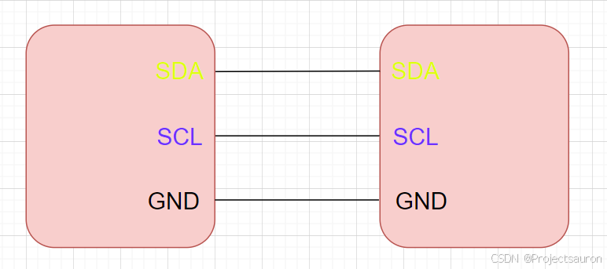
I2C 协议具有广泛的应用范围，如连接传感器、存储器、显示器等设备，常用于微控制器和嵌入式系统中，因为它使用的引脚较少，可以同时连接多个设备，并且具有简单的硬件和软件实现。
串行、8 位方向的双向数据传输在 Standard-mode 下最高可达 100 kbit/s；在 Fast-mode 下最高可达 400 kbit/s；在 Fast-mode Plus 下最高可达 1 Mbit/s；在 High-speed mode 下最高可达 3.4 Mbit/s。
在 Ultra Fast-mode 下，串行、8 位方向、单向数据传输速度高达 5 Mbit/s。
下表中列出了几个 I2C 的专业术语：
| 术语 | 描述 |
|---|---|
Transmitter - 发送器 |
向总线发送数据的设备 |
Receiver - 接收器 |
从总线接收数据的设备 |
Controller - 控制器 |
启动传输、生成时钟信号并终止传输的器件 |
Target - 目标 |
被控制器寻址的设备 |
Multi-controller - 多控制器 |
多个控制器可以尝试同时控制总线，而不会破坏消息 |
Arbitration - 仲裁 |
如果多个控制器同时尝试控制总线，则只允许一个控制器这样做，并且不会破坏消息 |
Synchronization - 同步 |
同步两个或多个器件的时钟信号的过程 |
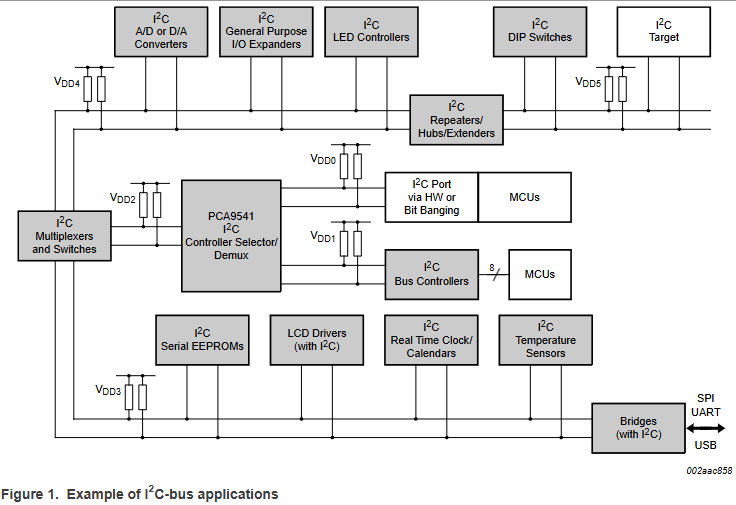
二、I2C 详解
1、I2C 总线简介
I2C 总线是一种多主机总线，连接在 I2C 总线上的器件分为 Master 和 Slaver。
- 主机有权发起和结束一次通信，从机只能被动呼叫；
- 当总线上有多个主机同时启用总线时，
I2C也具备冲突检测和仲裁的功能来防止错误产生； - 每个连接到
I2C总线上的器件都有一个唯一的地址（7 bit），且每个器件都可以作为主机也可以作为从机（但同一时刻只能有一个主机），总线上的器件增加和删除不影响其他器件正常工作； I2C总线在通信时总线上发送数据的器件为Transmitter，接收数据的器件为Receiver。
I2C 总线可以通过外部连线进行在线检测，便于系统故障诊断和调试，故障可以立即被寻址，软件也有利于标准化和模块化，缩短开发时间。
I2C 总线上可挂接的设备数量受总线的最大电容 400pF 限制。
总线具有极低的电流消耗，抗噪声干扰能力强，增加总线驱动器可以使总线电容扩大 10 倍，传输距离达到 15m；兼容不同电压等级的器件，工作温度范围宽。
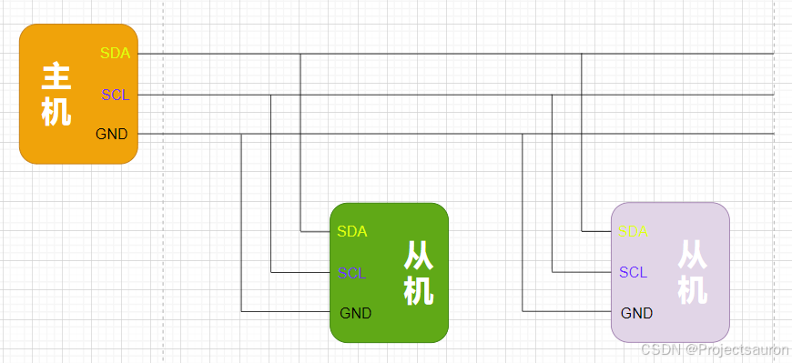
上图就是
I2C 总线如何同多台设备进行通信，在 I2C 总线上，每个从机都有其唯一的设备地址。所以我们只需要知道器件的地址，根据时序就可以实现微控制器与器件之间的通信。
注意，按照实际设计中经验大概是不超过 8 个器件。
这是由 I2C 地址决定：8 位地址，减去 1 位广播地址，是 7 位地址，
I2C 协议没有规定总线上设备最大数目，但是规定了 总线电容不能超过 400pF。管脚都是有输入电容的，PCB 上也会有寄生电容，所以会有一个限制。实际设计中经验值大概是不超过 8 个器件。
总线之所以规定电容大小是因为，I2C 的 OD（漏极输出， 漏极开路或集电极开路 ）要求外部有电阻上拉，这样才能执行线与逻辑。电阻和总线电容产生了一个 RC 延时效应，电容越大信号的边沿就越缓，有可能带来信号质量风险。传输速度越快，信号的窗口就越小，上升沿下降沿时间要求更短更陡峭，所以 RC 乘积必须更小。
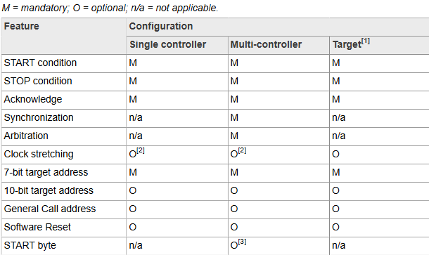
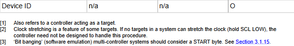
1.1 I2C 中为什么要有上拉电阻
I2C 支持多个主设备与多个从设备连接在同一根总线上，如果不开漏输出，会出现短路现象。 但是，采用开漏输出时，如果没有上拉电阻的存在，只能输出低电位，无法输出高点位，也就是说，连接上拉电阻后，才可以输出高电位。
- 当从端驱动 SDA/SCL 为低（0）时，从端会直接给 SDA/SCL 一个0值；
- 如果从端驱动 SDA/SCL 不为低（0）时，从端会给 SDA/SCL 一个高阻态值。
高阻态是一个无效驱动，而高电位（1）是一个有效驱动，如果置为 1 会跟其他的驱动源造成多驱动冲突。为了避免多重驱动的问题，当 Slave 或者 Master 不打算驱动任何一根线时（SDA/SCL），那必须把 SDA/SCL 给一个高阻态（z）值。
经过上拉处理后，如果在整个总线上，master 和 slave 都没有给 SDA/SCL 一个有效驱动（即低电位），会通过上拉电阻将 SCL/SDA 置为高电位（1）。
注意：这个给的高电位（1）是一个弱信号，可以防止形成多驱动源造成冲突。
I2C 支持多个主设备与多个从设备连接在同一根总线上，如果多个设备同时占用总线，怎么判断谁先占用总线呢？所以就需要一种仲裁机制。I2C 没有 Arbiter 直接的来处理仲裁，而是通过线与的逻辑实现仲裁。
仲裁过程：当主设备 A 准备占用 I2C 时，需要在 SCL 为高时，将 SDA 拉高，再拉低，满足一个启动条件。当主设备 A 将 SDA 拉高后，需要检查 SDA 的电平：
- 如果此时 SDA 电平为高，说明主设备可以占用总线，然后主设备 A 会将 SDA 拉低，一次满足启动条件，开始传输
- 如果此时 SDA 电平为低，说明总线已经被其他设备占用，主设备 A 会退出
- 因为线与逻辑的存在。只有总线上有其他的设备将 SDA 置为 0，线与后，SDA线的电平为 0。主设备 A 检查 SDA 线的电平时，会发现为低电平。所以仲裁时，哪个设备更早地将 SDA 线拉低，谁就抢占了优先权
2、I2C 协议相关知识
2.1 起始位
如下图，就是 I2C 通信起始标志，通过这个起始位就可以告诉 I2C 从机，主机要开始进行 I2C 通信了。==在 SCL 为高电平的时候，SDA 出现下降沿就表示为起始位==：
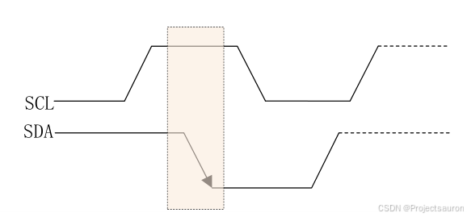
2.2 停止位
如下图，就是停止 I2C 通信的标志位，和起始位的功能相反。==在 SCL 位高电平的时候，SDA 出现上升沿就表示为停止位==：
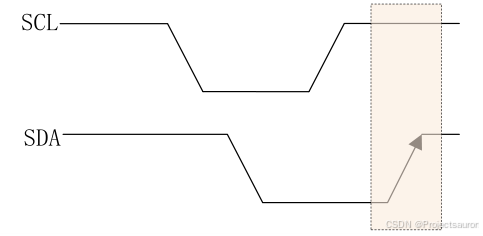
2.3 数据传输
如下图，I2C 总线在数据传输的时候要保证在 SCL 高电平期间，SDA 上的数据稳定，即 ==SDA 上的数据变化只能在 SCL 低电平期间发生==：
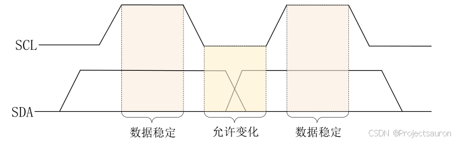
2.4 应答信号
当 I2C 主机发送完 8 位数据以后会将 SDA 设置为输入状态，等待 I2C 从机应答，也就是等到 I2C 从机告诉主机它接收到数据了。应答信号是由从机发出的，主机需要提供应答信号所需的时钟，主机发送完 8 位数据以后紧跟着的一个时钟信号就是给应答信号使用的。从机通过将 SDA 拉低来表示发出应答信号，表示通信成功，否则表示通信失败。
2.5 I2C 设备地址格式
I2C 设备的地址为 8 位，但是时序操作时最后一位不属于地址，而是 R/W 状态位。所以有用的是前 7 位，使用时地址整体右移一位处理即可。
除此之位，一个设备地址的前四位是固定的，是厂家用来表示设备类型的：
- 比如接口为
I2C的温度传感器类设备地址前四位一般为 1001 即 9X； - EEPROM 存储器地址前四位一般为 1010 即 AX；
- oled屏地址前四位一般为 0111 即 7X 等。
2.5 I2C 时序图
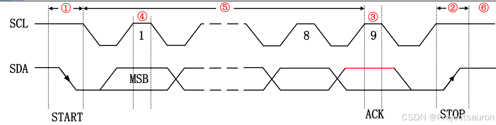
下面结合图例，将前面所提到的信息整合一下：
- 起始信号
当 SCL 为高电平期间，SDA 由高到低的跳变，起始信号是一种电平跳变时序信号，而不是一个电平信号。该信号由主机发出，在起始信号产生后，总线就处于被占用（Busy）状态，准备数据传输。
- 停止信号
当 SCL 为高电平期间，SDA 由低到高的跳变；停止信号也是一种电平跳变时序信号，而不是一个电平信号。该信号由主机发出，在停止信号发出后，总线就处于空闲（Free）状态。
- 应答信号
发送器每发送一个字节，就在时钟脉冲 9 期间释放数据线，由接收器反馈一个应答信号。应答信号为低电平时，规定为有效应答位（ACK 简称应答位），表示接收器已经成功地接收了该字节；应答信号为高电平时，规定为非应答位（NACK），一般表示接收器接收该字节没有成功。
当满足下面五个条件的时候，就会生成 NACK：
- 总线上没有具有传输地址的接收器，因此没有设备响应确认
- 接受器无法接收或发送，因为它正在执行某些实时功能，并且尚未准备好开始与控制器通信
- 在传输过程中，接收方会获得它无法理解的数据或命令
- 在传输过程中，接收方无法再接受任何数据字节
- 控制器接收器必须向目标发射器发出传输结束信号
- 数据有效性
IIC 总线进行数据传送时，时钟信号为高电平期间，数据线上的数据必须保持稳定，只有在时钟线上的信号为低电平期间，数据线上的高电平或低电平状态才允许变化。数据在 SCL 的上升沿到来之前就需准备好。并在下降沿到来之前必须稳定。
- 数据传输
在 IIC 总线上传送的每一位数据都有一个时钟脉冲相对应（或同步控制），即在 SCL 串行时钟的配合下，在 SDA 上逐位地串行传送每一位数据。数据位的传输是==边沿触发==。
- 空闲状态
IIC 总线的 SDA 和 SCL 两条信号线同时处于高电平时，规定为总线的空闲状态。此时各个器件的输出级场效应管均处在截止状态，即释放总线，由两条信号线各自的上拉电阻把电平拉高。
2.5.1 I2C 写时序
要在 I2C 总线上写入，主机将在总线上发送：一个启动开始标志、从机地址、最后一位（R/W位）设置为 0，这表示写入。
从设备发送 ACK 响应确认后，主设备将发送其希望写入的寄存器的寄存器地址。从设备将再次确认，让主设备知道它已准备就绪。在此之后，主机将开始向从机发送寄存器数据，直到主机发送了它需要的所有数据（有时这只是一个字节），并且主机将以停止条件终止传输。
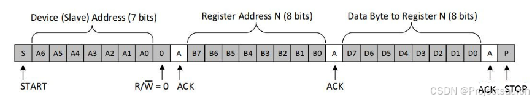
具体步骤如下：
- 开始信号。
- 发送
I2C设备地址，每个I2C器件都有一个设备地址，通过发送具体的设备地址来决定访问哪个I2C器件。这是一个 8 位的数据，其中高 7 位是设备地址，最后 1 位是读写位（为 1 的话表示这是一个读操作，为 0 的话表示这是一个写操作）。 - 读写控制位，因为是向
I2C从设备发送数据，因此是写信号 0。 - 从机发送的 ACK 应答信号。
- ==重新发送开始信号==。
- 发送要写入数据的寄存器地址。
- 从机发送的 ACK 应答信号。
- 发送要写入寄存器的数据。
- 从机发送的 ACK 应答信号。
- 停止信号。
2.5.2 I2C 读时序
主机为了读取从设备的数据，主机必须首先指出希望从从设备的哪个寄存器读取数据。这是由主机写入从设备的“写操作”类似的方式开始传输，通过发送 R/W 位等于 0 的地址（表示写入），然后是它希望从中读取的寄存器地址来完成的。
一旦从设备确认该寄存器地址，主机将再次发送启动条件，然后发送从设备地址，R/W 位设置为 1（表示读取）。这一次，从设备将确认读取请求，主机释放 SDA 总线，但将继续向从设备提供时钟。在这部分事务中，主机将成为主“接收器”，将成为从“发射器”。
主机将继续发送时钟脉冲 SCL，但会释放 SDA，以便从设备可以传输数据。在数据的每个字节结束时，主机将向从设备发送 ACK，让从设备知道它已准备好接收更多数据。一旦主机接收到预期的字节数，它将发送一个 NACK，向从设备发送信号以停止通信并释放总线。之后，主机将设置停止条件。
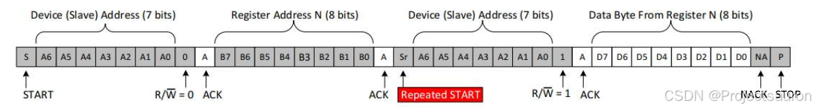
I2C 单字节读时序比写时序要复杂一点，读时序分为四个步骤，第一步是发送设备地址，第二步是发送要读取的寄存器地址，第三步重新发送设备地址，最后一步就是 I2C 从器件输出要读取的寄存器值，我们具体来看一下这步。
- 主机发送起始信号。
- 主机发送要读取的
I2C从设备地址。 - 读写控制位，因为是向
I2C从设备发送数据，因此是写信号 0。 - 从机发送的 ACK 应答信号。
- 重新发送 START 信号。
- 主机发送要读取的寄存器地址。
- 从机发送的 ACK 应答信号。
- 重新发送 START 信号。
- 重新发送要读取的
I2C从设备地址。 - 读写控制位，这里是读信号 1，表示接下来是从
I2C从设备里面读取数据。 - 从机发送的 ACK 应答信号。
- 从
I2C器件里面读取到的数据。 - 主机发出 NACK 信号，表示读取完成，不需要从机再发送 ACK 信号了。
- 主机发出 STOP 信号，停止
I2C通信。
2.5.3 单个/多个字节的写入/读取
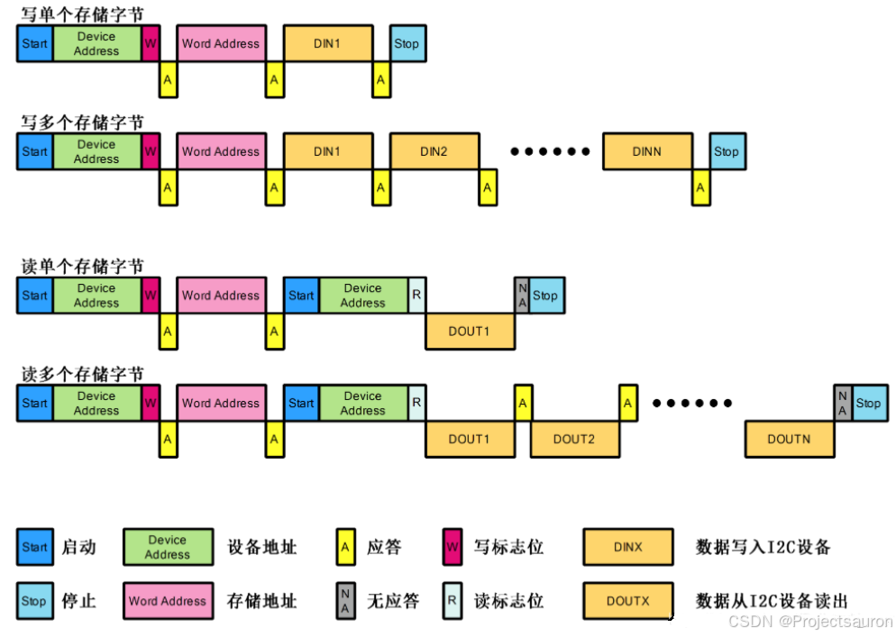
-
写入单个字节
向从机设备的某一个寄存器写一个字节数据：开始信号+设备地址(7位)+读/写(1位)+等待从机应答+寄存器地址(8位)+等待从机应答+要写的数据(8位)+等待从机应答+终止信号。 -
写入多个字节
向从机设备的某一个寄存器写多个字节数据：开始信号+设备地址(7位)+读/写(1位)+等待从机应答+寄存器地址(8位)+等待从机应答+要写的数据_1(8位)+等待从机应答+要写的数据_2(8位)+等待从机应答+······+要写的数据_N(8位)+等待从机应答+终止信号。 -
读取一个字节
从机设备的某一个寄存器读取一个字节数据：开始信号+设备地址(7位)+写(1位)+等待从机应答+数据地址(8位)+等待从机应答+开始信号+设备地址(7位)+读(1位)+等待从机应答+从机返回读取数据_1(8位)+主机(接收机)不再应答+终止信号 -
读取多个字节
从从机设备的某一个寄存器读取多个字节数据：开始信号+设备地址(7位)+写(1位)+等待从机应答+数据地址(8位)+等待从机应答+开始信号+设备地址(7位)+读(1位)+等待从机应答+从机返回读取数据_1(8位)+主机(接收机)应答+从机返回读取数据_2(8位)+主机(接收机)应答+......+从机返回读取数据_N(8位)+主机(接收机)不再应答+终止信号。
3、时钟同步和仲裁
两个控制器可以同时在空闲总线上开始传输，并且必须有一种方法来决定哪个控制器控制总线并完成其传输。这是通过时钟同步和时钟仲裁完成的。在单处理器系统中，不需要时钟同步和时钟仲裁。
3.1 时钟同步
I2C 接口的时钟同步是通过将所有接口连接到 SCL 线上的“线与”连接来实现的。这意味着 SCL 线上的高电平到低电平的转换会使相关控制器开始计数它们的低电平周期，一旦某个控制器的时钟变为低电平，它会保持 SCL 线在该状态，直到达到时钟的高电平状态（见下图）。然而，如果另一个时钟仍在其低电平周期内，该时钟的低电平到高电平的转换可能不会改变 SCL 线的状态。因此，具有最长低电平周期的控制器会保持 SCL 线为低电平。具有较短低电平周期的控制器在此期间会进入高电平等待状态。
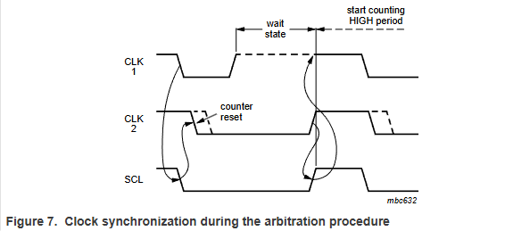
简单来说，如果有多个主机同时产生时钟，那么==只有所有主机都发送高电平时，SCL 上才表现为高电平，否则 SCL 都表现为低电平==。
SCL 线上由高电平到低电平的跳变将影响到这些器件，一旦某个器件的时钟信号下跳为低电平，将使 SCL 线一直保持低电平，使 SCL 线上的所有器件开始低电平期。此时，低电平周期短的器件的时钟由低至高的跳变并不能影响 SCL 线的状态，于是这些器件将进入高电平等待的状态。当所有器件的时钟信号都上跳为高电平时，低电平期结束，SCL 线被释放返回高电平，即所有的器件都同时开始它们的高电平期。其后，第一个结束高电平期的器件又将 SCL 线拉成低电平。这样就在 SCL 线上产生一个同步时钟。
可见，时钟低电平时间由时钟低电平期最长的器件确定，而时钟高电平时间由时钟高电平期最短的器件确定。
3.2 时钟仲裁
总线仲裁与时钟同步类似，是在系统中使用多个控制器时才需要的协议部分。
==当所有主机在 SDA 上都写 1 时，SDA 的数据才是 1，只要有一个主机写 0，那此时 SDA 上的数据就是 0==。
目标设备不参与仲裁过程。控制器只有在总线空闲时才能开始传输。两个控制器可能会在 START 条件的最小保持时间（tHD;STA）内生成一个 START 条件，从而在总线上产生有效的 START 条件。此时需要进行仲裁，以确定哪个控制器将完成其传输。
仲裁逐位进行。在每一位期间，当 SCL 为高电平时，每个控制器都会检查 SDA 电平是否与其发送的内容匹配。此过程可能需要多个比特。
实际上，如果两个主机如果发送的时序和数据完全一样，则两个主机都能正常完成整个数据传输。
当一个控制器第一次尝试发送高电平但检测到 SDA 电平为低电平时，该控制器知道它已经输掉了仲裁，并关闭其 SDA 输出驱动器；另一个控制器则继续完成其事务。在仲裁过程中没有信息丢失。输掉仲裁的控制器可以在其输掉仲裁的字节结束之前生成时钟脉冲，并且必须在总线空闲时重新启动其传输。
如果一个控制器还具有目标功能，并且在寻址阶段输掉了仲裁，可能获胜的控制器正在尝试寻址它。因此，输掉仲裁的控制器必须立即切换到其目标模式。
下图展示了两个控制器的仲裁过程，具体涉及的控制器数量取决于连接到总线的控制器数量。当生成 DATA1 的控制器的内部数据水平与 SDA 线上实际水平之间出现差异时，DATA1 输出被关闭。这不会影响由获胜控制器发起的数据传输。
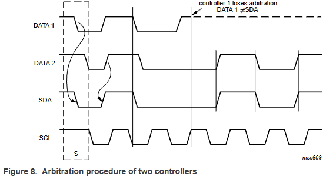
由于 I2C 总线的控制完全由竞争控制器发送的地址和数据决定，因此不存在中央控制器，也没有总线的优先级顺序。如果仲裁过程仍在进行中，而某个控制器发送重复的 START 条件或 STOP 条件时，另一控制器仍在发送数据，就会出现不确定状态。换句话说，以下组合会导致不确定状态：
- 控制器 1 发送重复的 START 条件，而控制器 2 发送数据位。
- 控制器 1 发送 STOP 条件，而控制器 2 发送数据位。
- 控制器 1 发送重复的 START 条件，而控制器 2 发送 STOP 条件。
4、目标地址和 R/W 位
数据传输遵循如下图的格式：
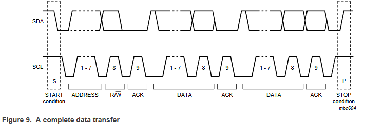
在 START 信号后，紧跟的是 7 位的目标地址，后跟第 8 位，即数据方向位（R/W）——“0” - WRITE，“1” - READ。数据传输始终由 STOP 信号终止。 但是，如果控制器仍然希望在总线上通信，它可以生成重复的 START 条件并寻址另一个目标，而无需先生成 STOP 条件。在这种传输中，读/写格式的各种组合是可能的。
如下是几种可能的数据格式：
-
发射器向接收器发送信号，传输方向不变，接受器确认每个字节
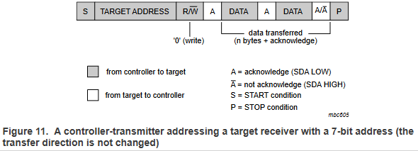
-
控制器在每一个字节后立即读取目标。在第一次确认的那一刻，发射器成为接收器，接收器成为发射器。 此第一个确认仍由目标生成。控制器生成后续确认。STOP 条件由控制器生成，控制器在 STOP 条件之前发送 NACK
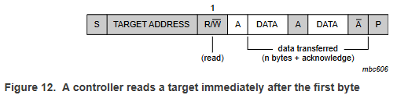
-
组合格式。在传输中更改方向期间，START 条件和目标地址都重复，但 R/W 位相反。如果控制器接收器发送重复的 START 条件，它会在重复的 START 条件之前发送 NACK
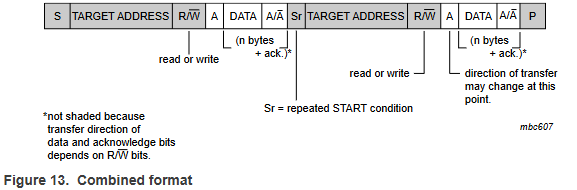
START 条件后跟 STOP 条件（空消息）是非法格式。然而，许多设备被设计为在这种情况下正常运行
5、速度模式
| 速度模式 | 最高比特率（ bit/s） | 备注 |
|---|---|---|
| 标准模式（Sm） | 100K | 双向传输，高速模式兼容低速模式 |
| 快速模式（Fm） | 400K | 同上 |
| 快速模式增强（Fm+） | 1M | 同上 |
| 高速模式（HSm） | 3.4M | 同上 |
| 超快速模式（UFm） | 5M | 单向传输，不兼容其他模式 |